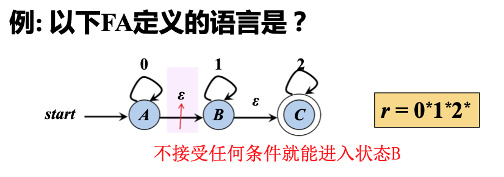

词法分析👀
词法分析概述👀
- 程序以字符串的形式传递给编译器
->
词法分析：将输入字符串识别为有意义的子串
- Partition input string into substrings (lexeme1)
- Classify them according to their role (tokens)
Example

Tokens 是指程序设计语言中具有独立含义的最小词法单位，包含单词、标点符号、操作符、分隔符等。如一些典型测试语言的一些 token 类型为：
| Type | EXamples |
|---|---|
| ID | foo n14 last |
| Num | 73 0 00 012 |
| REAL | 6.1 .5 10. 1e-1 |
| IF | if |
| COMMA | , |
| NOTEQ | != |
| LPAREN | ( |
| RPAREN | ) |
另外一些 tokens 如 IF, VOID, RETURN 称作 reserved words，在大多数语言中不能成为 identifiers（即上图中的 ID）
Examples of nontokens are
comment /* try again */
preprocessor directive #include <stdio.h>
preprocessor directive #define NUMS 5, 6
macro NUMS
blanks, tabs and newlines
在一些需要宏预处理器 (macro preprocessor) 的语言中，由预处理器处理源程序的字符流生成另外的字符流，然后由送入词法分析器（Lexical Analyzer）。这种宏预处理过程也可以与词法分析器集成在一起。
辅助任务：过滤注释、空格, etc.
正则表达式👀
形式化地描述词法
- 字母表 (alphabet): 符号的有限集合
- 字母，数字，标点符号…
- 串 (string, word): 字母表中符号的有穷序列
- 串 s 的长度，常记作 |s|，表示串中符号的个数
- 空串 (empty string) 用 \(\epsilon\) 表示
区别
- \(\epsilon\) 表示空串
- \(\emptyset\) 表示空集
- \(\{\epsilon\}\) 是非空集合
串上的运算
- 连接 (concatenation): y 附加到 x 后形成的串记作 xy
- 例如，如果 x=dog 且 y=house，那么 xy=doghouse
- 幂运算 (串 s 的 n 次幂：将 n 个 s 连接起来)
形式语言👀
语言: 字母表 \(\sum\) 上的串的集合
- e.g. \(\{\epsilon, 0, 00, 000, \dots \}\), \(\{\epsilon\}\), \(\emptyset\)
- 句子：属于语言的串
语言的运算：（优先级：幂 > 连接 > 并）
在书写正则表达式时，我们有时省略 · 和 \(\epsilon\) ，并规定 * 优先级高于 · 高于 | 。还有一些缩写形式：
- \([abcd]\) 表示 \(\{a | b | c | d\}\)
- \([b-gM-Qkr]\) 表示 \([bcdefgMNOPQkr]\)
- \(T?\) 表示 \(T | \epsilon\), 即 \(T\) 或空串
还有一些其他的符号：
.： 除换行符外的任意单个字符"a.+*": 引号中的字符串匹配自身
Example
给定语言 \(L = \{a, b\}\), \(M = \{cc, dd\}\)
| 运算 | 描述 | 结果 |
|---|---|---|
| 并 | \(L \cup M = \{s \vert s \in L 或 s \in M \}\) | \(L \cup M = \{a, b, cc, dd\}\) |
| 连接 | \(LM = \{st \vert s \in L 且 t \in M\}\) | \(LM = \{acc, add, bcc, bdd\}\) |
| 幂 | \(L^0 = \{\epsilon\}\), \(L^i = L^{i-1}L\) | \(L^2 = \{aa, ab, ba, bb\}\) |
| 闭包 | \(L^* = \bigcup_{i=0}^{\infty}L^i\) | \(L^* = \{\epsilon, a, b, aa, ab, ba, bb, \dots\}\) |
| 正闭包 | \(L^+ = \bigcup_{i=1}^{\infty}L^i\) | \(L^+ = \{a, b, aa, ab, ba, bb, \dots\}\) |
正则表达式 | RE👀
正则表达式 (regular expression) \(r\) 定义正则语言，记为 \(L(r)\)
- \(\epsilon\) 是一个 RE, \(L(\epsilon) = \{\epsilon\}\)
- 如果 \(a \in \sum\)，那么 \(a\) 是一个 RE, \(L(a) = \{a\}\)
- 假设 \(r\) 和 \(s\) 都是 RE, 分别表示语言 \(L(r)\) 和 \(L(s)\)
- \(r | s\) 是 RE, \(L(r|s) = L(r) \cup L(s)\)
- \(rs\) 是 RE, \(L(rs) = L(r)L(s)\)
- \(r^*\) 是 RE, \(L(r^*) = (L(r))^*\)
- \((r)\) 是 RE, \(L((r)) = L(r)\)
- 优先级：闭包* > 连接 > 选择|
正则表达式的一些定律
| 定律 | 描述 |
|---|---|
| \(r \vert s = s \vert r\) | 选择运算的交换律 |
| \((r \vert s) \vert t = r \vert (s \vert t)\) | 选择运算的结合律 |
| \(r(st) = (rs)t\) | 连接运算的结合律 |
| \(r(s \vert t) = rs \vert rt\) | 连接运算对选择运算的分配律 |
| \(\epsilon r = r\epsilon = r\) | 闭包运算的幺元 |
| \(r^* = (r \vert \epsilon)^*\) | 闭包中一定含 \(\epsilon\) |
| \(r^{**} = r^*\) | 闭包运算的幂等律 |
正则定义, 词法分析👀
正则定义 (regular definition):
- 对于比较复杂的语言，为了构造简洁的正则式，可先构造简单的正则式，再将这些正则式组合起来，形成一个与该语言匹配的正则序列
- 正则定义是具有如下形式的定义序列：
- 各个 \(d_i\) 是不同的标识符，称为定义名
- 每个 \(r_i\) 都是 \(\sum \cup \{d_1, d_2, \dots, d_{i-1} \}\) 上的正则表达式
给一些 RE 命名，并在之后的 RE 中像使用字母表中的符号一样使用这些名字
Example
- 整数的正则定义:
- \(\text{digit} \rightarrow 0|1|2|3|4|5|6|7|8|9\) 或简记为 \([0-9]\)
- \(\text{number} \rightarrow \text{digit (digit)}^*\) 或 \(\text{digit}^+\)
- C 语言的标识符 (字母、数字和下划线组成的串) 的正则定义
- \(\text{digit} \rightarrow [0-9]\)
- \(\text{letter}\_ \rightarrow [A-Za-z\_]\)
- \(\text{id} \rightarrow \text{letter}\_(\text{letter}\_ | \text{digit})^*\)
词法分析：字符流到 Token-lexeme 对
- Select a set of tokens
- Number, Keyword, Identifier, …
- Write a R.E. for the lexemes of each token
- Number = digit+
- Keyword = ‘if’ | ‘else’ | \(\dots\)
- Identifier = letter (letter | digit)*
- LeftPar = ‘(‘
- \(\dots\)
正则规则的二义性
给定 if8, 它是单个标识符，还是两个 token (if 和 8) 的组合？
为解决这个问题，引出两种 rule：
1. 最长匹配 Longest Match: The longest initial substring of the input that can match any regular expression is taken as the next token.
2. 规则优先 Rule Priority:
- For a particular longest initial substring, the first regular expression that can match determines its token-type.
- This means that the order of writing down the regular-expression rules has significance.
因此，按最长匹配，识别为 if8 。 按规则优先 if 优先于 identifier，所以 if8 是一个 if token 和一个 identifier token 的组合。
有穷自动机 | Finite Automata👀
判定一个串匹配某个正则表达式，并形式化地描述这个匹配过程
有穷自动机 (Finite Automaton, FA) 是一个五元组 \(M = (S, \sum, move, s_0, F)\)
- \(S\) : 有穷状态集合
- \(\sum\) : 输入字符集合 / 字母表
- \(move(s,a)\) : 转换函数，表示从状态 \(s\) 出发，读入输入 \(a\) 时转化到的状态
- \(s_0\) : 初始状态，\(s_0 \in S\)
- \(F\) : 终止状态集合，\(F \subseteq S\)
有穷自动机的表示：
- 转换图 (Transition Diagram)：用图形表示有穷自动机

- 转换表 (Transition Table)：用表格表示有穷自动机
有穷自动机接收的串
给定输入串 \(x\)，如果存在一个对应于串 \(x\) 的从 初始状态 到某个 终止状态 的转换序列，则称串 \(x\) 被该 \(FA\) 接收

有穷自动机接收（定义）的语言
- 由一个有穷自动机 \(M\) 接收的所有串构成的集合，称为该 \(FA\) 接收（或定义）的语言，记为 \(L(M)\)
- 以上一个图为例，\(L(M)\) = 所有以 \(abb\) 结尾的字母表 \(\{a, b\}\) 上的串的集合
状态转换: Epsilon Moves
- \(\epsilon - \text{moves}\): 一种特殊的状态转换方式 (自动机可以不读入任何输入，而从状态 A 转移到状态 B)
- e.g. 
非确定有穷自动机 | NFA👀
非确定有穷自动机 (Nondeterministic finite automata, NFA)
- \(\sum\) : 输入字符集合 / 字母表, 假设 \(\epsilon \notin \sum\)
- \(move\): \(S \times (\sum \cup \{\epsilon\}) \rightarrow P(S)\). \(move(s, a)\) 表示从状态 \(s\) 出发，沿着标记为 \(a\) 的边所能到达的 状态集合
- 在状态 \(s\) 时读入a, 可能迁移到 多个不同的状态
- 可能有 \(\epsilon - \text{moves}\) (不读入任何输入而迁移到其他状态)
确定有穷自动机 | DFA👀
确定性有穷自动机 (Deterministic finite automata, DFA)
- \(\sum\) : 输入字符集合 / 字母表, 假设 \(\epsilon \notin \sum\)
- \(move\): \(S \times \sum \rightarrow S\). \(\delta (s, a)\) 表示从状态 \(s\) 出发，沿着标记为 \(a\) 的边所能到达的 状态
- 在状态 \(s\) 时读入a, 只能迁移到 一个确定的状态
- 没有 \(\epsilon - \text{moves}\)
NFA vs. DFA vs. RE
词法分析: 如何构造 \(FA\), 来识别用 RE 刻画的 Token?
识别字符串👀
构造 NFA 识别字符串：
构造 DFA 识别字符串
- 输入：以文件结束符
eof结尾的字符串 \(x\) - DFA \(D\): 开始状态 \(s_0\)，接收状态集 \(F\)，转换函数 \(move\)
- 输出：如果 \(D\) 接收 \(x\)，则回答 “yes”，否则回答 “no”
s = s_0;
c = nextChar();
while (c != eof) {
s = move(s, c);
c = nextChar();
}
if s in F then return "yes"
else return "no"
nextChar()返回 \(x\) 的下一个字符move(s, c)返回从状态 \(s\) 读入字符 \(c\) 后能到达的状态
词法分析器自动生成👀
从 RE 到 FA
- \(RE \rightarrow NFA\)
- \(NFA \rightarrow DFA\) (子集构造法)
- \(DFA\) 简化
RE -> NFA👀
- 输入: 正则表达式 \(r\)
-
输出: 定义它的 NFA, 记为 \(N(r)\)
-
Thompson 算法: 基于对 RE 的结构做归纳
- 对基本的 RE 直接构造：\(\epsilon, a\)
- 对复合的 RE 递归构造: \(st, s|t, s^*\)
- \(N(r)\) 仅一个接受状态，且没有出边
1) 处理 epsilon 和 a
直接构造：识别 \(\epsilon\) 和字母表中一个符号 \(a\) 的 NFA
2) 处理 s|t
递归构造：选择 \(s | t\)
3) 处理 st
递归构造：连接 \(st\)

4) 处理 s*
递归构造：闭包 \(s^*\)
Example

NFA -> DFA (子集构造法)👀
1) 子集构造法 (subset construction) 原则:
- DFA 的每个状态是 NFA 的状态集合的一个子集
- 读了输入 \(a_i\) 后 NFA 能到达的所有状态：\(s_1, s_2, \dots, s_k\), 则 DFA 到达一个状态，对应于 NFA 的状态集合 \(\{s_1, s_2, \dots, s_k\}\) 的子集
2) 定义 NFA 状态(集)上的一些操作：
| 操作 | 描述 |
|---|---|
| \(\epsilon - closure(s)\) | NFA 状态 \(s\) 的 \(\epsilon\) -闭包, \(s\) 经 \(\epsilon\) 转换所能到达的状态集合 |
| \(\epsilon - closure(T)\) | \(T\) 中所有状态的 \(\epsilon\) -闭包的并集，即 \(\bigcup_{s \in T} \epsilon-closure(s)\) |
\(T\) 是 NFA 的状态集合的子集
3) 子集构造法的步骤：
- NFA 的初始状态的 \(\epsilon\) -闭包对应于 DFA 的初始状态
- 针对每个 DFA 状态 (对应 NFA 状态子集 \(A\) ), 求输入每个 \(a_i\) 后能到达的 NFA 状态的 \(\epsilon\) -闭包并集
- 该集合 \(S\) 对应 DFA 中的一个已有状态或一个要新加的状态
- 由此逐步构造 DFA 的状态转换表，直到不动点
Example

DFA 简化👀
DFA 状态数量的最小化:
- 一个正则语言可对应于多个识别此语言的 DFA
- 通过 DFA 的最小化可得到状态数量最少的 DFA (不计同构，这样的 DFA 是唯一的)
可区分的状态 (Distinguishable States)
如果存在串 \(x\)，使得从 \(s\), \(t\) 出发，一个到达 接受状态，一个到达 非接受状态，那么 \(x\) 就区分了 \(s\) 和 \(t\)
DFA 最小化算法👀
- (推论) DFA状态等价的条件:
- 一致性条件 : \(s\), \(t\) 同为终态或非终态
- 蔓延性条件 : 对所有输入符号, \(s\), \(t\) 必须转换到等价的状态集中，同时具有传递性
- DFA 简化算法
- 划分部分: 根据以上条件迭代式划分等价类,
- 构造部分: 从划分得到的等价类中选取代表，并重建 DFA
1) DFA最小化算法 (划分部分)
- 初始化分：划分为接受状态组和非接受状态组 \(\prod = \{S - F, F\}\)
- 迭代，继续划分

- 如果 \(\prod_{\text{new}}\) == \(\prod\) 相等，停止迭代，令 \(\prod_{\text{final}} = \prod\)；否则，更新 \(\prod = \prod_{\text{new}}\)，转到步骤 2
2) DFA最小化算法 (构造部分)
在 \(\prod_{\text{final}}\) 中选择一个状态作代表，作为最小化 DFA 中的状态
- 开始状态：包含原开始状态的组的代表
- 接受状态：包含了原接受状态的组的代表（这个组一定只包含接受状态）
- 转换关系构造为：如果 \(s\) 是 \(G\) 的代表，而原 DFA 中 \(s\) 在 \(a\) 上的转换到达 \(t\), 且 \(t\) 所在组的代表为 \(r\)，那么最小化 DFA 中有从 \(s\) 到 \(r\) 的在 \(a\) 上的转换
More

{kind=link}
{kind=link}
{kind=link}
{kind=link}
{kind=link}
{kind=link}
{kind=link}
{kind=link}
{kind=link}
{kind=link}
{kind=link}
\(D\) states 中的一个状态未加标记表示还没有搜索过它的各个后继
一些习题
-
词素, a member (string) of the set (token) such as “else”, “if” ↩